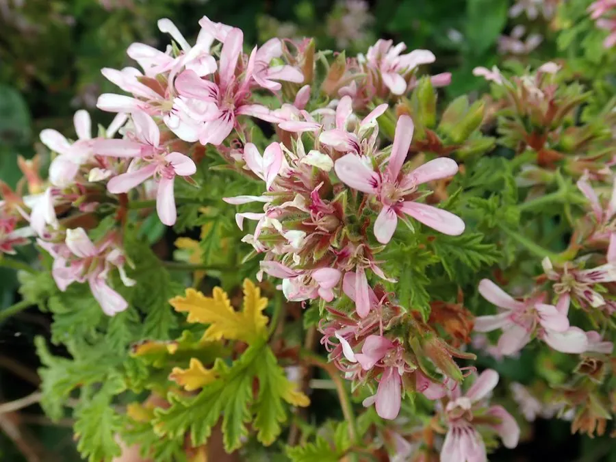

花卉与草本 · 植物界
天竺葵 Pelargonium hortorum

牻牛儿苗科多年生草本，球状伞形花序锦簇如绣球，是窗台花箱和阳台的经典花卉，原产南非，又名洋绣球。
- 分类
- 门被子植物门纲木兰纲目牻牛儿苗目科牻牛儿苗科属天竺葵属
- 栖息环境
- 南非的干燥山坡与灌丛，喜凉爽、阳光充足、通风
- 地理分布
- 原产南非，现世界各地广泛盆栽，中国各地常见
- 保护级别
- 暂无评估
物种志
天竺葵为牻牛儿苗科天竺葵属多年生草本，常作亚灌木状栽培，株高 30–60 厘米，茎肉质，多分枝，全株被短毛。叶片圆形至肾形，边缘有浅裂和锯齿，表面有暗色环纹，揉碎后有特殊气味。伞形花序顶生，由多数小花组成球状，花有红、粉、白、橙等色，花期 5–7 月，温暖地区可全年开花。
天竺葵原产南非，园艺品种多为杂交选育，喜凉爽、阳光充足和通风良好的环境，怕高温高湿和积水，夏季高温时生长停滞。它花球饱满、花期长，是欧洲窗台花箱的经典植物；叶片含挥发油，揉碎后有独特香气，同属的香叶天竺葵可用于提取玫瑰香精。栽培以扦插为主，花后修剪残花和过密枝条可促进再次开花。
形态与习性
- 株高30–60 厘米，茎肉质多分枝
- 花期5–7 月，温暖地区可全年开花
- 果期花后结蒴果
- 光照喜充足阳光，夏季需遮阴
- 水分喜干燥，忌积水
- 土壤疏松、排水良好的沙壤土
- 繁殖以扦插为主
- 主要用途窗台盆栽、花坛、提取香精
趣味知识
- 天竺葵的花序由许多小花组成球状，远看像绣球，故又称“洋绣球”。
- 揉碎它的叶片会闻到特殊气味，同属的香叶天竺葵可提取玫瑰香精。
- 天竺葵怕高温高湿，夏季闷热时容易落叶甚至腐烂。
- 它是欧洲窗台花箱的经典植物，花球丰满、花期长。